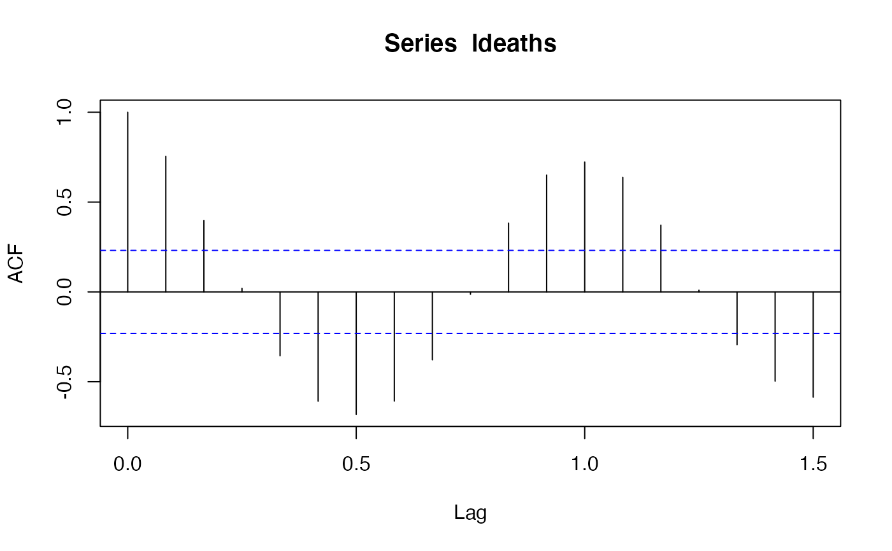

Change the maximal lag in a lagged object
maxLagass.RdChange the maximal lag in a lagged object.
Usage
maxLag(object, ...) <- valueArguments
- object
an object for which this makes sense.
- ...
currently not used.
- value
the new value of the maximal lag, a non-negative integer number.
Details
The replacement version of maxLag() changes the maximal lag in
an object to value. It is a generic function with no default
method.
For the core Lagged classes this is done by simply extending or
shrinking the data part to the requested value. Subclasses of
"Lagged" and other classes, in general, may need more elaborate
changes. If so, they should define their own methods.
When value is larger than the current maxLag(object),
the entries for the new lags are filled with NA's.
Examples
la1 <- Lagged(drop(acf(ldeaths)$acf))

la3 <- la1
la3
#> An object of class "Lagged1d"
#> Slot *data*:
#> Lag_0 Lag_1 Lag_2 Lag_3 Lag_4 Lag_5
#> 1.000000000 0.755051141 0.396956836 0.019395714 -0.355897989 -0.608566374
#> Lag_6 Lag_7 Lag_8 Lag_9 Lag_10 Lag_11
#> -0.681383469 -0.607909875 -0.378212377 -0.012975866 0.383252644 0.650206704
#> Lag_12 Lag_13 Lag_14 Lag_15 Lag_16 Lag_17
#> 0.723167071 0.638001465 0.371577811 0.009467461 -0.293699737 -0.496742216
#> Lag_18
#> -0.585558984
## shrink la3
maxLag(la3) # 18
#> [1] 18
maxLag(la3) <- 5
la3
#> An object of class "Lagged1d"
#> Slot *data*:
#> Lag_0 Lag_1 Lag_2 Lag_3 Lag_4 Lag_5
#> 1.00000000 0.75505114 0.39695684 0.01939571 -0.35589799 -0.60856637
maxLag(la3) # 5
#> [1] 5
## extend la3, new entries are filled with NA's
maxLag(la3) <- 10
la3
#> An object of class "Lagged1d"
#> Slot *data*:
#> Lag_0 Lag_1 Lag_2 Lag_3 Lag_4 Lag_5
#> 1.00000000 0.75505114 0.39695684 0.01939571 -0.35589799 -0.60856637
#> Lag_6 Lag_7 Lag_8 Lag_9 Lag_10
#> NA NA NA NA NA
## alternatively, use "[<-" which accepts any replacement values
la3[11:13] <- 0
la3
#> An object of class "Lagged1d"
#> Slot *data*:
#> Lag_0 Lag_1 Lag_2 Lag_3 Lag_4 Lag_5
#> 1.00000000 0.75505114 0.39695684 0.01939571 -0.35589799 -0.60856637
#> Lag_6 Lag_7 Lag_8 Lag_9 Lag_10 Lag_11
#> NA NA NA NA NA 0.00000000
#> Lag_12 Lag_13
#> 0.00000000 0.00000000